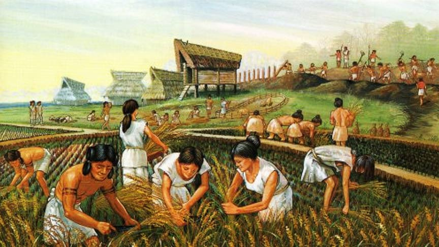
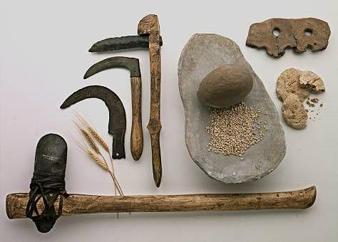

Introduction to the Neolithic
The Neolithic began in the fertile crescent at the onset of the holocene 11,000 years ago
Neolithic grain package from Near East Fertile crescent
- Barley
- Wheat
- Chickpea
- pistachio
Neolithic Norman burial site for male elites
Ancient DNA gives new insights into a Norman Neolithic monumental cemetery dedicated to male elites

>Neolithic tool set
